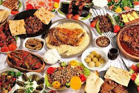

Top Destinations in Türkiye
Explore Türkiye’s most iconic cities and breathtaking landscapes, where history, culture, and natural beauty come together.


Travel Guide for Türkiye
Everything you need to know before traveling to Türkiye.
Visa & Entry
Most travelers can enter Türkiye visa-free or with an e-Visa. Ensure your passport is valid for at least 6 months.
Getting Around
Domestic flights, buses, trains, metros, and taxis make traveling around Türkiye easy and affordable.

Food & Culture
Enjoy kebabs, baklava, and Turkish tea. Respect local customs, especially at mosques.
Best Time to Visit
Spring and autumn offer pleasant weather. Summer suits beaches, winter is ideal for snow lovers.